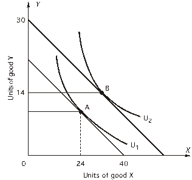

نظرية سلوك المستهلك (Consumer Behavior)
مقدمة

مشكلة المستهلك
 النقاط الرئيسية:
النقاط الرئيسية:
- الربح والمستهلك: الربح يتطلب مبيعات، والمبيعات تعتمد كلياً على المستهلكين. لذا، فهم سلوك المستهلك هو حجر الزاوية لاتخاذ قرارات إدارية مربحة.
- مشكلة تعظيم المستهلك (Consumer Optimization Problem):
- الهدف: تعظيم الرضا (أو المنفعة) من الاستهلاك.
- القيد: يخضع هذا التعظيم لقيد الميزانية، حيث يجب أن يكون الإنفاق على السلع مساوياً للدخل.
المنفعة ومنحنيات السواء
 المنفعة (Utility):
المنفعة (Utility):
- يستخدم الاقتصاديون مفهوم "المنفعة" لترتيب تفضيلات المستهلكين.
- تعبر عن الفوائد أو الرضا الذي يحصل عليه المستهلك من استهلاك السلع والخدمات.
منحنيات السواء (Indifference Curves):
- هي مجموعة من النقاط التي تمثل توليفات مختلفة من السلع تعطي جميعها نفس مستوى المنفعة.
- على هذا المنحنى، يكون المستهلك "غير مبالٍ" (Indifferent) بين أي من هذه الخيارات، لأنها جميعاً ترضيه بنفس القدر.
شكل منحنيات السواء
 الخصائص:
الخصائص:
- ميل سالب (Negatively Sloped): ينحدر لأسفل من اليسار لليمين. يعني أن الحصول على المزيد من سلعة يتطلب التخلي عن سلعة أخرى.
- محدب تجاه نقطة الأصل (Convex): بسبب تناقص المعدل الحدي للإحلال.
- توجد منحنيات متعددة: كل منحنى أعلى يمثل مستوى منفعة أعلى.
المعدل الحدي للإحلال (MRS)
 التعريف:
التعريف:
- هو المعدل الذي يتم به استبدال سلعة بأخرى مع الحفاظ على نفس مستوى المنفعة.
- يساوي القيمة المطلقة لميل منحنى السواء.
- يتناقص كلما تحركنا لأسفل على منحنى السواء.
- مستعد للتخلي عن الكثير من Y للحصول على وحدة واحدة من X عندما يكون لديك القليل من X.
المعادلة: $$MRS = - \frac{\Delta Y}{\Delta X} = \frac{MU_X}{MU_Y}$$
المنفعة الحدية (Marginal Utility)
 التعريف:
التعريف:
- الإضافة إلى المنفعة الكلية الناتجة عن استهلاك وحدة إضافية واحدة من السلعة.
- تناقص المنفعة الحدية: كلما زاد استهلاك السلعة، تقل المنفعة التي نحصل عليها من كل وحدة إضافية.
المعادلة: $$MU = \frac{\Delta U}{\Delta X}$$
خط ميزانية المستهلك (Budget Line)
 التعريف:
التعريف:
- يوضح الحزم الممكنة للشراء عند أسعار معينة ودخل ثابت.
المعادلة: $$M = P_X X + P_Y Y$$ أو بصيغة الميل والتقاطع: $$Y = \frac{M}{P_Y} - \frac{P_X}{P_Y} X$$
تحولات خط الميزانية
 أنواع التحولات:
أنواع التحولات:
- تغير الدخل (Changes in Income): انتقال موازٍ لخط الميزانية (Panel A). زيادة الدخل تنقله للخارج، والنقصان للداخل.
- تغير سعر X (Changes in Price of X): دوران الخط حول نقطة تقاطع المحور الصادي (Panel B). انخفاض سعر X يجعله أكثر انبساطاً (يسمح بشراء المزيد من X).
تعظيم المنفعة (Utility Maximization)
 المفهوم:
المفهوم:
- يسعى المستهلك للوصول إلى أعلى منحنى سواء ممكن في حدود قيد الميزانية.
- يحدث هذا عند النقطة التي يكون فيها منحنى السواء تماس (Tangent) مع خط الميزانية.
شرط تعظيم المنفعة
 عند نقطة التماس:
عند نقطة التماس:
- ميل منحنى السواء (MRS) يساوي ميل خط الميزانية ($P_X/P_Y$).
-
المعادلة: $$MRS = \frac{MU_X}{MU_Y} = \frac{P_X}{P_Y}$$
-
الشرط الاقتصادي: أن تتساوى المنفعة الحدية للدولار المنفق على كل سلعة: $$\frac{MU_X}{P_X} = \frac{MU_Y}{P_Y}$$
مثال: تعظيم المنفعة
 المعطيات:
المعطيات:
- الميزانية = 40 دولار.
- سعر البرجر = 5 دولار، سعر الكولا = 4 دولار.
- الحل الأمثل: 4 برجر و 5 كولا.
- لماذا؟ لأن عند هذه الكميات، المنفعة الحدية لكل دولار متساوية (4 وحدات منفعة لكل دولار).
طلب المستهلك الفردي
 الاشتقاق:
الاشتقاق:
- يربط بين الكميات التي تعظم المنفعة ومستويات الأسعار المختلفة.
- نجد نقطة التوازن المثلى لكل خط ميزانية جديد ناتج عن تغير سعر X (مع ثبات الدخل وسعر Y).
- ميل منحنى الطلب يوضح قانون الطلب (علاقة عكسية بين السعر والكمية).
طلب السوق والمنفعة الحدية
 طلب السوق:
طلب السوق:
- يتم اشتقاقه عن طريق الجمع الأفقي لمنحنيات طلب جميع الأفراد في السوق.
- الأسعار على طول منحنى طلب السوق تقيس القيمة الاقتصادية لكل وحدة.
- منحنى الطلب يوضح المنفعة الحدية (MB) التي يضعها المستهلكون على آخر وحدة تم استهلاكها.
اشتقاق طلب السوق (مثال)
 الجدول يوضح:
الجدول يوضح:
- كيفية جمع الكميات المطلوبة لكل مستهلك (1، 2، 3) عند كل مستوى سعري للحصول على طلب السوق الكلي.
- مثال: عند السعر 4، الكمية المطلوبة = 8 + 3 + 1 = 12.
أثر الإحلال وأثر الدخل (Substitution & Income Effects)

 عندما يتغير السعر، ينقسم التأثير الكلي على الكمية المطلوبة إلى جزأين:
عندما يتغير السعر، ينقسم التأثير الكلي على الكمية المطلوبة إلى جزأين:
- أثر الإحلال (Substitution Effect):
- التغير في الاستهلاك نتيجة لتغير الأسعار النسبية فقط (بافتراض نفس مستوى المنفعة).
- دائماً سالب (عكسي مع السعر): ارتفاع السعر يقلل الكمية المطلوبة (بسبب التحول لسلع أخرى أرخص).
- أثر الدخل (Income Effect):
- التغير في الاستهلاك الناتج عن التغير في القوة الشرائية للدخل الحقيقي.
- للسلع العادية (Normal Goods): يعزز أثر الإحلال (انخفاض السعر -> زيادة القوة الشرائية -> شراء المزيد).
- للسلع الرديئة (Inferior Goods): يعاكس أثر الإحلال.
التحليل البياني لانخفاض سعر X
 يوضح الشكل:
يوضح الشكل:
- Panel A (سلعة عادية): أثر الدخل وأثر الإحلال يعملان في نفس الاتجاه (زيادة الكمية).
- Panel B (سلعة رديئة): أثر الدخل يعمل عكس أثر الإحلال، لكن أثر الإحلال (في الغالب) يكون أقوى، فتظل العلاقة عكسية بين السعر والكمية.
تقدير الطلب والتنبؤ به (Demand Estimation & Forecasting)
طرق تقدير الطلب المباشرة

 1. مقابلات المستهلكين (Consumer Interviews):
1. مقابلات المستهلكين (Consumer Interviews):
- تتراوح بين التحدث مع المتسوقين وتوجيه استبيانات مفصلة.
- المشاكل المحتملة: اختيار عينة ممثلة، وتحيز الاستجابة (الفرق بين ما يقوله المستهلك وما يفعله).
2. دراسات السوق (Market Studies):
- محاولة تثبيت العوامل الأخرى وتغيير السعر فقط ومراقبة الطلب.
3. التجارب (Experiments):
- تجارب معملية: استخدام متطوعين لمحاكاة ظروف الشراء.
- تجارب ميدانية: مراقبة السلوك الفعلي للمستهلكين في السوق.
دوال الطلب التجريبية (Empirical Demand Functions)

- شكل الدالة الخطية: $$Q = a + bP + cM + dP_R + eN$$ حيث: $Q$ الكمية، $P$ السعر، $M$ الدخل، $P_R$ سعر السلعة المرتبطة، $N$ عدد المشترين.
إشارات المعاملات والمرونات المتوقعة
 توقع الإشارات:
توقع الإشارات:
- b (معامل السعر): سالب (قانون الطلب).
- c (معامل الدخل): موجب للسلع العادية، وسالب للسلع الرديئة.
- d (معامل السلعة المرتبطة): موجب للسلع البديلة (Substitutes)، وسالب للسلع المكملة (Complements).
حساب المرونات: $$\hat{E} = \hat{b} \frac{P}{Q}, \quad \hat{E}M = \hat{c} \frac{M}{Q}, \quad \hat{E}{XR} = \hat{d} \frac{P_R}{Q}$$
التنبؤ الخطي (Linear Forecasting)

- استخدام تحليل الانحدار (Regression Analysis) لتقدير قيم المعاملات.
- يتم تحديد الدلالة الإحصائية (Statistical Significance) عن طريق مقارنة t-value بالقيم الحرجة أو فحص p-value.
مثال تطبيقي: Checkers Pizza

 نتائج الانحدار:
نتائج الانحدار:
- R-Square = 0.9555 (النموذج يفسر 95.5% من التغيرات).
- معامل السعر (P) = -213.422 (سالب كما هو متوقع، وذو دلالة إحصائية لأن P-value صغير جداً).
- معامل الدخل (M) = 0.09109 (موجب -> سلعة عادية).
التنبؤ بالكمية: عند الأسعار والدخل المعطى، نتنبأ بأن الكمية المطلوبة $Q = 2,784.4$.
حساب المرونات للمثال:
- مرونة الطلب السعرية $\hat{E} = -0.694$ (طلب غير مرن).
- مرونة الدخل $\hat{E}_M = 0.871$ (سلعة ضرورية).
- مرونة التقاطع مع المنافس (Al) = 0.368 (سلعة بديلة).
المرونة والطلب (Elasticity and Demand)
مرونة الطلب السعرية (Price Elasticity of Demand - E)
 المفهوم:
المفهوم:
- مقياس لمدى حساسية المستهلكين للتغيرات في سعر السلعة.
- قانون الطلب: يضمن أن تكون الإشارة سالبة دائماً (علاقة عكسية بين السعر والكمية).
- القيمة: عادة ما يتم التعبير عنها كقيمة مطلقة (موجبة).
المعادلة الأساسية: $$E = \frac{\%\Delta Q}{\%\Delta P}$$
قياس المرونة وتصنيفها
 كلما زادت القيمة المطلقة للمرونة، زادت حساسية المستهلكين لتغير السعر.
كلما زادت القيمة المطلقة للمرونة، زادت حساسية المستهلكين لتغير السعر.
| نوع المرونة (Elasticity Type) | القيمة ($|E|$) | الوصف | | :--- | :--- | :--- | | مرن (Elastic) | $|E| > 1$ | نسبة التغير في الكمية أكبر من نسبة التغير في السعر. | | أحادي المرونة (Unitary Elastic) | $|E| = 1$ | نسبة التغير في الكمية تساوي نسبة التغير في السعر. | | غير مرن (Inelastic) | $|E| < 1$ | نسبة التغير في الكمية أقل من نسبة التغير في السعر. |
حساب مرونة الطلب السعرية
 1. عند نقطة محددة (Point Elasticity):
$$E = \frac{\Delta Q}{\Delta P} \times \frac{P}{Q}$$
1. عند نقطة محددة (Point Elasticity):
$$E = \frac{\Delta Q}{\Delta P} \times \frac{P}{Q}$$
2. عند فترة أو قوس (Arc Elasticity): يستخدم عند حساب المرونة بين نقطتين، باستخدام المتوسط. $$E = \frac{\Delta Q}{\Delta P} \times \frac{\text{Average } P}{\text{Average } Q}$$
مثال حسابي (Arc Elasticity)
 بين النقطتين A و B:
بين النقطتين A و B:
- النقطة A: السعر = 20، الكمية = 14.
- النقطة B: السعر = 26، الكمية = 10.
-
الحساب: $$E = \frac{10 - 14}{(10 + 14)/2} \div \frac{26 - 20}{(26 + 20)/2} = \frac{-4}{12} \div \frac{6}{23} = |-1.27| = 1.27$$
-
النتيجة: الطلب مرن (لأن 1.27 > 1).
المرونة على طول منحنى الطلب الخطي


- على منحنى الطلب المستقيم، الميل ثابت لكن المرونة تتغير.
- تتناقص المرونة كلما تحركنا لأسفل المنحنى (من اليسار لليمين):
- عند أعلى نقطة (تقاطع السعر): $E = \infty$.
- النصف العلوي: مرن ($|E| > 1$).
- نقطة المنتصف: أحادي المرونة ($|E| = 1$).
- النصف السفلي: غير مرن ($|E| < 1$).
- عند أدنى نقطة (تقاطع الكمية): $E = 0$.
المرونة والإيراد الكلي (Total Revenue)


 الإيراد الكلي ($TR$) يساوي السعر مضروباً في الكمية ($P \times Q$). العلاقة بين تغير السعر وتغير الإيراد تعتمد على المرونة:
الإيراد الكلي ($TR$) يساوي السعر مضروباً في الكمية ($P \times Q$). العلاقة بين تغير السعر وتغير الإيراد تعتمد على المرونة:
| نوع المرونة | أثر ارتفاع السعر على TR | أثر انخفاض السعر على TR | السبب |
|---|---|---|---|
| مرن (Elastic) | ينخفض الإيراد | يزداد الإيراد | تأثير الكمية (الكبير) يطغى على تأثير السعر. |
| أحادي (Unitary) | لا يتغير | لا يتغير | الإيراد الكلي عند أقصى قيمة (Maximized). |
| غير مرن (Inelastic) | يزداد الإيراد | ينخفض الإيراد | تأثير السعر يطغى على تأثير الكمية (الصغير). |
الخلاصة للمدراء:
- لزيادة الإيراد في الجزء المرن، يجب خفض السعر.
- لزيادة الإيراد في الجزء غير المرن، يجب رفع السعر.
أمثلة رقمية على الإيراد والمرونة


- طلب غير مرن ($E_D < 1$):
- زيادة السعر من 1 إلى 2 دولار أدت لزيادة الإيراد من 9 إلى 16 دولار.
- (الزيادة في السعر تغلبت على الانخفاض في الكمية).
- طلب مرن ($E_D > 1$):
- زيادة السعر من 8 إلى 9 دولار أدت لانخفاض الإيراد من 16 إلى 9 دولار.
- (الانخفاض الكبير في الكمية تغلب على الزيادة في السعر).
الإيراد الحدي (Marginal Revenue - MR)


 التعريف:
التعريف:
- هو التغير في الإيراد الكلي الناتج عن بيع وحدة إضافية واحدة.
- يمثل ميل منحنى الإيراد الكلي (TR).
- المعادلة: $$MR = \frac{\Delta TR}{\Delta Q}$$
العلاقة بين Demand, MR, TR:
- عندما يكون MR > 0: الإيراد الكلي (TR) يتزايد (الطلب مرن).
- عندما يكون MR = 0: الإيراد الكلي (TR) عند قيمته العظمى (الطلب أحادي المرونة).
- عندما يكون MR < 0: الإيراد الكلي (TR) يتناقص (الطلب غير مرن).
- منحنى MR يقع دائماً أسفل منحنى الطلب (Demand Curve) وينحدر بسرعة أكبر (يقطع المسافة الأفقية في المنتصف للدالة الخطية).
ملخص العلاقات (MR, TR, Elasticity)

 يلخص الجدول التالي العلاقة الحيوية للمدراء:
يلخص الجدول التالي العلاقة الحيوية للمدراء:
| الإيراد الحدي ($MR$) | الإيراد الكلي ($TR$) | مرونة الطلب ($E$) |
|---|---|---|
| موجب ($MR > 0$) | يتزايد (مع انخفاض السعر وزيادة الكمية) | مرن (Elastic) ($ |
| صفر ($MR = 0$) | عند الحد الأقصى (Maximized) | أحادي المرونة (Unitary) ($ |
| سالب ($MR < 0$) | يتناقص (مع انخفاض السعر وزيادة الكمية) | غير مرن (Inelastic) ($ |
العوامل المؤثرة على مرونة الطلب السعرية

- توفر البدائل (Availability of Substitutes): كلما زاد عدد البدائل وجودتها، زادت المرونة (أصبح المستهلك أكثر حساسية للسعر).
- نسبة الإنفاق من الميزانية (Share of Budget): كلما شكلت السلعة نسبة أكبر من ميزانية المستهلك، زادت المرونة.
- الفترة الزمنية (Time Period): كلما كانت الفترة الزمنية للتكيف أطول، زادت المرونة (يجد المستهلكون بدائل مع مرور الوقت).
مرونات أخرى
1. مرونة الطلب الدخلية (Income Elasticity - $E_M$)

- تقيس استجابة الكمية المطلوبة للتغير في الدخل.
-
المعادلة: $$E_M = \frac{\%\Delta Q}{\%\Delta M}$$
-
التصنيف:
- موجبة (+): سلع عادية (Normal Good).
- سالبة (-): سلع رديئة (Inferior Good).
2. مرونة الطلب المتقاطعة (Cross-Price Elasticity - $E_{XY}$)

- تقيس استجابة الكمية المطلوبة من السلعة X للتغير في سعر السلعة Y.
-
المعادلة: $$E_{XY} = \frac{\%\Delta Q_X}{\%\Delta P_Y}$$
-
التصنيف:
- موجبة (+): السلعتان بديلتان (Substitutes).
- سالبة (-): السلعتان مكملتان (Complements).
Week 2 Practice Problems - الأسبوع الثاني
السؤال 1: قيد الميزانية (Budget Constraint)

المعطيات من الشيت:
Suppose that the price of good X is $20 and the price of good Y is $40.
الأسئلة:
1) If U1 is the highest level of utility that the consumer can achieve, what is the consumer's income?
الإجابة من الشيت:
Find income at the endpoints when one good is 0 units. 40 units of good X at $20 per unit = $800
الشرح بالمصري: بنروح لأي طرف من خط الميزانية ونحسب. لو المستهلك اشترى 40 وحدة من X بس (و صفر من Y):
- الدخل = 40 × $20 = $800
2) How many units of good X will the consumer choose if point B is the utility-maximizing choice?
الإجابة من الشيت:
Write the equation of the income line, fill in the units of good Y, and solve for units of good X. Income at point B is (30 units x $40/unit) = $1200 1200 = ($20 x X) + ($40 x 14) X = 32 units
الشرح بالمصري: عند النقطة B، الدخل = $1200 (لأن عنده 30 وحدة من Y × $40 = $1200) نعوض في معادلة الميزانية: $$1200 = (20 \times X) + (40 \times 14)$$ $$1200 = 20X + 560$$ $$X = 32$$
3) If income is $800, how many units of good Y will the consumer choose?
الإجابة من الشيت:
Write the equation of the income line, fill in the units of good X, and solve for units of good Y. Income at point A is (40 units x $20/unit) = $800 800 = ($20 x 24) + ($40 x Y) Y = 8 units
الشرح بالمصري: عند النقطة A، بيشتري 24 وحدة من X: $$800 = (20 \times 24) + (40 \times Y)$$ $$800 = 480 + 40Y$$ $$Y = 8$$
السؤال 2: الإيراد الكلي والمرونة (TR & Elasticity)

الرسمة بتوضح:
- الشمال: منحنى الطلب (P من 0 لـ 50، Q من 0 لـ 1000)
- اليمين: منحنى الإيراد الكلي TR (شكل قوس)
- عند Q=100: TR = $4,500، MR = +40
- عند Q=700: MR = -20
1) What is the price for which 100 units can be sold?
الإجابة من الشيت:
At 100 units, TR = $4,500 and TR = P x Q 4500 = P x 100 P = $45
الشرح بالمصري: من الرسمة، عند 100 وحدة الإيراد = $4,500 TR = P × Q → 4500 = P × 100 → P = $45
2) At what price is total revenue maximized?
الإجابة من الشيت:
On a linear demand curve, TR is maximized at its midpoint. P = $25
الشرح بالمصري: في منحنى الطلب الخطي، أعلى إيراد بيكون عند نقطة المنتصف (Midpoint). السعر = $25، الكمية = 500
3) What is the marginal revenue of the 100th unit?
الإجابة من الشيت:
MR is the slope of the TR curve - shown in the graph as 40
الشرح بالمصري: الإيراد الحدي = ميل منحنى TR. من الرسمة عند 100 وحدة، MR = 40 (موجب = الطلب مرن)
4) At the 700th unit, is demand elastic or inelastic?
الإجابة من الشيت:
At 700 units, MR is negative. This corresponds to the lower half of the Demand curve which is the Inelastic portion.
الشرح بالمصري:
- النصف العلوي من منحنى الطلب (من 0 لـ 500): MR موجب = طلب مرن
- النصف السفلي (من 500 لـ 1000): MR سالب = طلب غير مرن عند 700 وحدة، MR = -20 (سالب) = Inelastic
5) What is the maximum possible total revenue?
الإجابة من الشيت:
TR is maximized at the midpoint of the linear Demand curve. At that point, P = $25 and Q = 500. TR = (P x Q) = $12,500
الشرح بالمصري: عند نقطة المنتصف: P = $25، Q = 500 TR = 25 × 500 = $12,500
السؤال 3: حساب المرونة (Arc Elasticity)
البيانات من الشيت:
| Price | Quantity demanded |
|---|---|
| $200 | 1,000 |
| $150 | 1,400 |
| $100 | 1,800 |
1) If price falls from $200 to $150, what is the price elasticity of demand over this range?
الإجابة من الشيت:
E = [ (1400 - 1000) / 1200 ] / [ (200 - 150) / 175 ] = 1.17
الشرح بالمصري: نستخدم Arc Elasticity: $$E = \frac{(1400 - 1000) / 1200}{(200 - 150) / 175} = \frac{400/1200}{50/175} = 1.17$$
2) Is that elastic or inelastic demand?
الإجابة من الشيت:
E > 1 → Elastic
الشرح بالمصري: بما إن 1.17 > 1، الطلب مرن (Elastic)
3) As output increases from 1000 to 1400 units, what is marginal revenue per unit?
الإجابة من الشيت:
MR is change in total revenue (TR) per unit MR = [ ($150 x 1400) - ($200 x 1000) ] / (1400 - 1000) MR = $25 per unit
الشرح بالمصري: $$MR = \frac{(\$150 \times 1400) - (\$200 \times 1000)}{1400 - 1000}$$ $$MR = \frac{210,000 - 200,000}{400} = \frac{10,000}{400} = \$25$$
4) If price falls from $150 to $100, what is the price elasticity of demand over this range?
الإجابة من الشيت:
E = [ (1800 - 1400) / 1600 ] / [ (150 - 100) / 125 ] = 0.625 E < 1 → Inelastic
الشرح بالمصري: $$E = \frac{(1800 - 1400) / 1600}{(150 - 100) / 125} = \frac{400/1600}{50/125} = 0.625$$ بما إن 0.625 < 1، الطلب غير مرن (Inelastic)
5) If price rises from $100 to $150, what will happen to total revenue?
الإجابة من الشيت:
If Demand is Inelastic, increasing price will yield greater TR TR will Increase
الشرح بالمصري: في المنطقة غير المرنة، لما السعر يزيد، الإيراد الكلي بيزيد (لأن الناس مش بتقلل استهلاكها كتير)
السؤال 4: تقدير الطلب (Demand Estimation)
معادلة الطلب المقدرة: $$Q = 25 - 5P + 0.32M + 12P_R$$
من الشيت:
The estimated demand for a good is [equation shown in image] where Q is the quantity demanded of the good, P is the price of the good, M is income, and PR is the price of related good R.
1) Does the coefficient on P have the expected sign?
الإجابة من الشيت:
YES - Law of Demand requires that if P increases, Qd decreases (Inverse Relationship) means negative coefficient
الشرح بالمصري: أيوه! قانون الطلب بيقول لما السعر يزيد، الكمية تقل = علاقة عكسية = معامل سالب ✓
2) What does the coefficient on M tell us?
الإجابة من الشيت:
Positive coefficient on M means that as income rises, Qd rises NORMAL good
الشرح بالمصري: المعامل موجب = لما الدخل يزيد، الطلب يزيد = سلعة عادية (Normal Good) (لو كان سالب، كانت هتكون سلعة رديئة Inferior Good)
3) What can we infer about this good and the related good?
الإجابة من الشيت:
Positive coefficient on PR means that as price of related good rises, Qd for this good rises SUBSTITUTES
الشرح بالمصري: المعامل موجب = لما سعر السلعة المرتبطة يزيد، الطلب على سلعتنا يزيد = السلعتين بدائل (Substitutes) (زي بيبسي وكوكاكولا)
4) If income decreases by $1000 (all else the same), what will happen to the quantity demanded?
الإجابة من الشيت:
ΔQd = (Income Change x M Coefficient) ΔQd = (-1000 x .32) = -320
الشرح بالمصري: معامل M = 0.32 $$\Delta Q = \Delta M \times 0.32$$ $$\Delta Q = -1000 \times 0.32 = -320$$ الكمية هتقل بـ 320 وحدة
5) If the price of the good falls by $4, what will happen to the quantity demanded?
الإجابة من الشيت:
ΔQd = (Price Change x P Coefficient) ΔQd = (-4 x -5) = +20
الشرح بالمصري: معامل P = -5 $$\Delta Q = \Delta P \times (-5)$$ $$\Delta Q = -4 \times (-5) = +20$$ الكمية هتزيد بـ 20 وحدة (لأن السعر قل، الناس بتشتري أكتر)